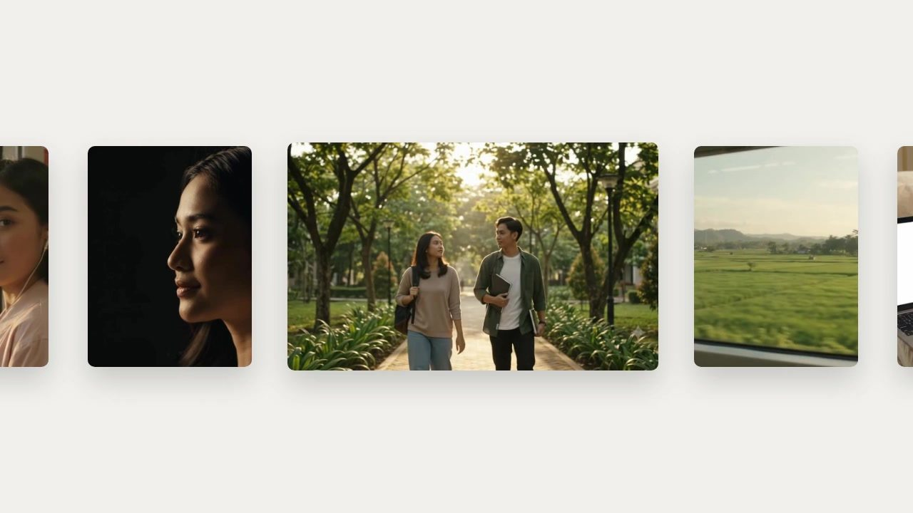
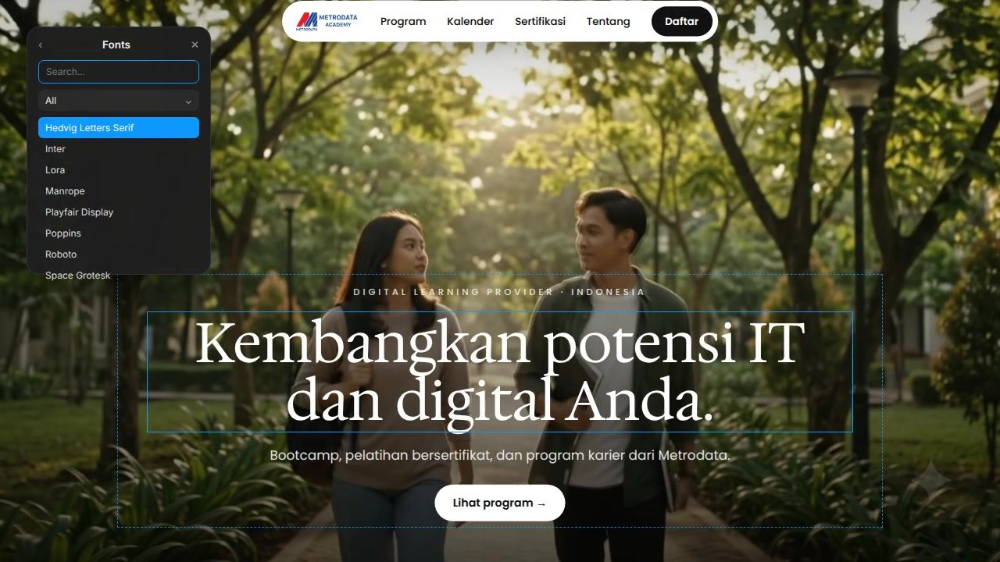
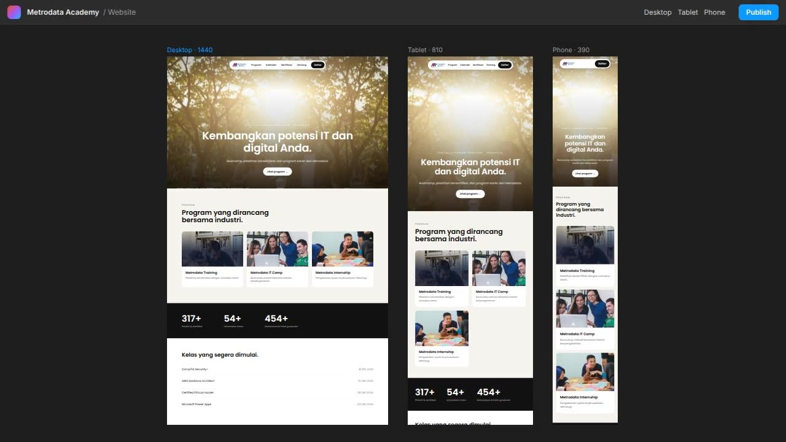
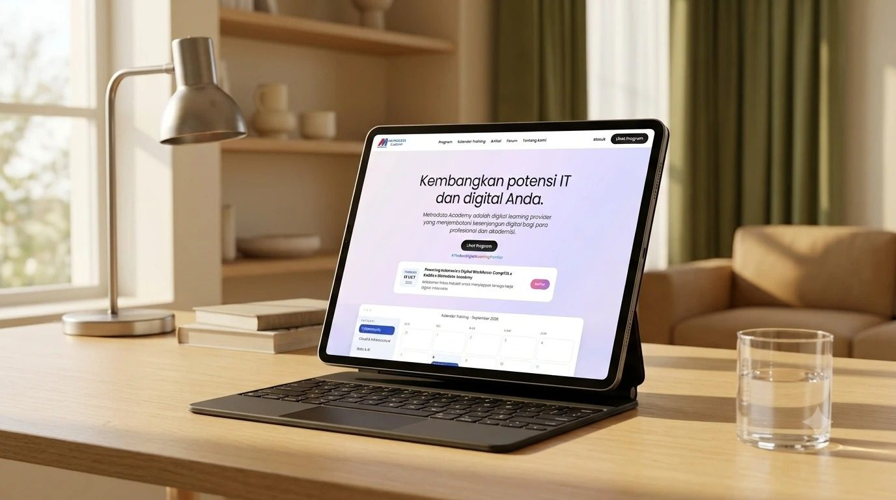

Digital learning provider — Indonesia
Metrodata Academy — IT training & certification Role: UI/UX Designer Scope: Website, design system, documentation Methods: Research, benchmarking, stakeholder workshops Stack: Web, responsive Screens rebuilt for this portfolio — the original files stayed with the company.
Metrodata Academy
Metrodata Academy is the learning arm of Metrodata Electronics, one of Indonesia’s largest IT distributors. It exists to close the country’s digital skills gap — bootcamps, certified training and career programs that help students and working professionals level up.
I joined as the UI/UX designer responsible for the Academy’s website. The brief sounded simple — put the programs online. The real job was turning a catalogue of trainings, camps, internships and certifications into one clear path, credible enough to stand next to the global certification brands people already trust.
Along the way I built the design system and wrote its documentation, so the designers who came after me could pick the work up without starting over.





Belajar sesuai jalur Anda.
Bootcamp, pelatihan bersertifikat, dan program karier — untuk mahasiswa, profesional, dan institusi.
Program unggulan
